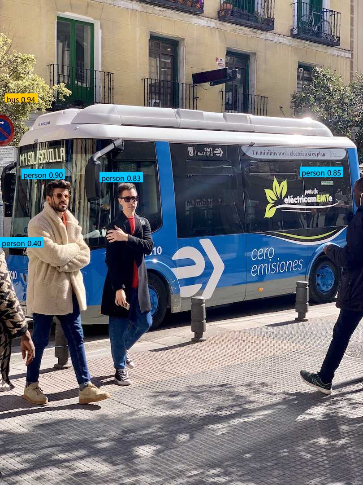

把简历里写到的多项 AIGC / 多模态能力，用可运行、可复现的代码复现为四个演示模块，并统一到带「指标口径页」的门户里。每个性能数字都能指出定义、公式、数据集与计算脚本——实测达不到简历值的，按实测报，不凑数。
这是一份可验证的技术作品，不是概念 PPT。四个模块分别复现了「安防智能体」「文案去 AI 味」「漫剧自动生产」「指标口径门户」四类能力；点开仓库里的演示录屏，能直接看到它们跑起来的样子。
四层串联的智能安防 Agent：看懂画面里的目标，听懂自然语言提问，从知识库检索答案，并把事件写成工单。
把"AI 味"很重的文案改得自然通顺，并支持原文、开源方案、自研规则三路并排对比，质检可量化。
一条命令把剧本变成短视频；中断后重跑会跳过已完成步骤，不重复烧钱出图，只重做失败步。
把所有模块聚到一个门户里，并公开每个性能指标的"定义 / 公式 / 数据集 / 脚本 / 实测值"，接受追问。
各模块通过统一底座与 HTTP 服务解耦，可独立演示，也可串成一条端到端链路。
下面是 Demo A 本次实测跑出来的目标检测结果（YOLO11n + CUDA 真实推理，非示意）：

Demo C 漫剧流水线端到端出图（ComfyUI 经 HTTP 调用，animagine-xl-4.0，832×1216，28 步，单张 14.5s，非示意）：
其余模块截图 / 录屏成片放入 assets/ 后即可在此嵌入。
录屏分镜（14 镜，可直接照读）：recording_shotlist.xlsx ｜
全链路演示脚本 + 讲稿串词：demo_runbook_p5.md
# 最小演示路径（详见 README） cd interview-demo .venv\Scripts\python.exe scripts\demo_a_e2e.py --no-asr # Demo A .venv\Scripts\python.exe -m demo_b_copywriting.app # Demo B :8100 .venv\Scripts\python.exe -m portal.app # Demo D :8200 # Demo C 须用默认解释器在普通终端跑 aigc-comic，见 demo_runbook_p5.md